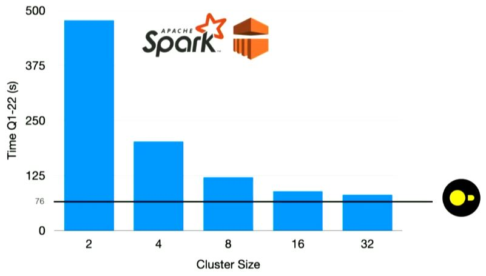

Data Wrangling [for Python or R] Like a Boss With DuckDB
Speaker: Hannes Mühleisen
Session description
Data wrangling is the thorny hedge that higher powers have placed in front of the enjoyable task of actually analyzing or visualizing data. Common struggles come from importing data from ill-mannered CSV files, the tedious task of orchestrating efficient data transformation, or the inevitable management of changes to tables. Data wrangling is rife with questionable ad-hoc solutions, which can sometimes even make things worse. The design rationale of DuckDB is to support the task of data wrangling by bringing the best of decades of data management research and best practices to the world of interactive data analysis in R or Python. For example, DuckDB has one of the world’s most advanced CSV reader, native support for Parquet files and Arrow structures, an efficient parallel vectorized query processing engine, and support for efficient atomic updates to tables. All of this is wrapped up in a zero-dependency package available in a programming language near you for free. In my talk, I will discuss the above as well as the design rationale of DuckDB, which was designed and built in collaboration with the Data Science community in the first place.
Session notes
New data management system that seeks to not be “slower and more frustrating than to read into memory” with focus on performance as well as the user experience.
- Is in-process: “Running in R, Python, or whatever, with a DuckDB connection, it means that the entire code of the data management system actually runs within that process”
- Since running within the R process, can take in data.frame/parquet/…, perform actions and give back the same type seamlessly
- Is in contrast to client-server
- Automatically parallelises analyses tasks to available cores
- Still ensures high per-core efficiency with C++ implementations
- If data does not fit in memory, it uses the hard disc
- DuckDB can read and write most file types - including parquet files
Duckplyr
Directly replaces dplyr, utilising the exact same syntax.
- Is the fastest of all solution for doing actions like joins, group-bys, etc.
- Utilises holistic optimisation to derive which columns are gonna be used, which rows can be pruned early, etc. by creating a hierarchy of actions in a query and parallelisation tasks most efficiently
- To do holistic optimisation,
duckplyrobjects need to be lazy, but also need to be non-lazy (otherwise fx.ggplotwill not be able to work with them) - found a solution where they look like non-lazy objects that look “normal”, but behind the scenesduckplyruses them lazily to optimise calculations
- To do holistic optimisation,
- Utilises holistic optimisation to derive which columns are gonna be used, which rows can be pruned early, etc. by creating a hierarchy of actions in a query and parallelisation tasks most efficiently
- Will fall back to
dplyrif any issues- User will not be affected - either it’s faster than
dplyrand otherwise it’s just the same as usingdplyr
- User will not be affected - either it’s faster than
.duckdb files
.duckdbfile format which can be thought of like a zip file - it can contain several data sets- Data can be manipulated in the file to have logic of the queries directly
- Can
CREATE MACROto use inside the file for data wrangling
Is big data dead?
The rate at which we can produce data is much slower (of course there is automatically collected data, but it tends to be less valuable and with lots of repetition) than the rate at which our computing units are improving. Speed and size of CPUs, SSDs in current computers are increasing rapidly.
Hannes recommends the blog post Redshift Files: the Hunt for Big Data that talks about paper from Amazon that have confirmed that from the data sits they see, we are close to data singularity (loosely defined in the talk as 99% of data is “processable” on a single computer).
Save costs without compromising on speed with single node(/machine) using DuckDB
DuckDB run on single node is faster than Apache Spark with arbitrarily many clusters (still slower with 1024 computers) as seen below - due to inefficient core performance, coordination cost and distribution of systems

Conclusion: We risk spending A LOT of money (and CO2) to run many computers in a cluster, though a single computer is enough in many cases
Extensions
Recently opened for community created extensions to be added to DuckDB
Solution for many concurrent users
“MotherDuck is a collaborative data warehouse that extends the power of DuckDB to the cloud.”